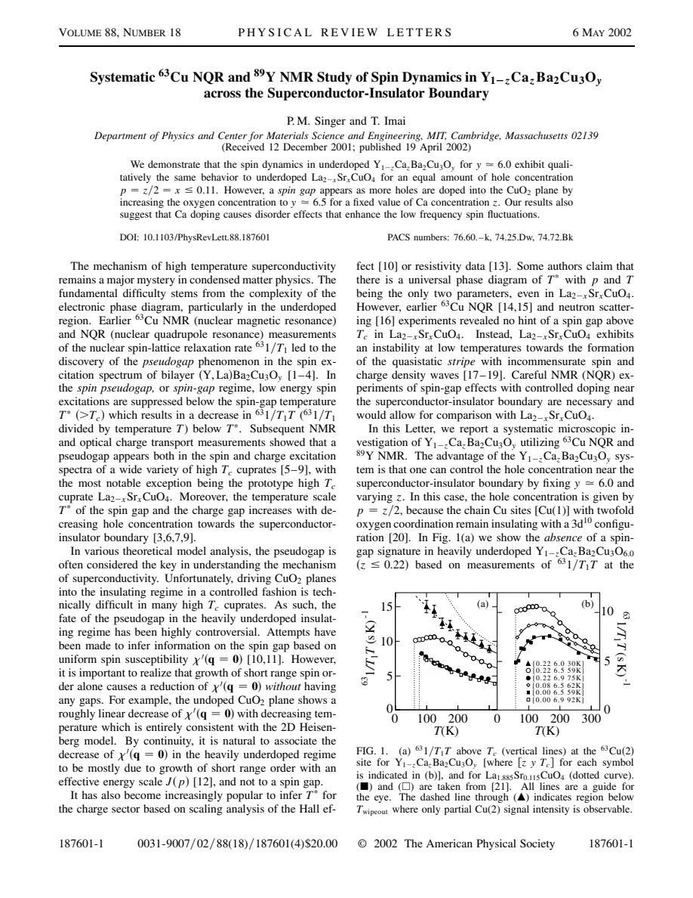
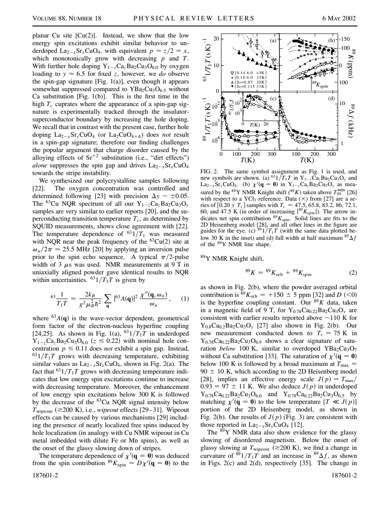
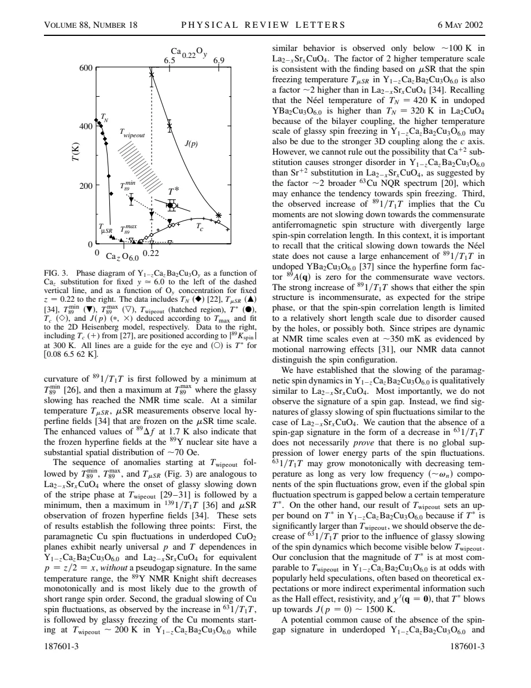

experiment · Singer · supplied source 2002
Systematic ⁶³Cu NQR and ⁸⁹Y NMR Study of Spin Dynamics in Y1-zCazBa₂Cu₃Oᵧ across the Superconductor-Insulator Boundary
At oxygen content near 6.0, Ca-doped YBCO shows growing low-frequency Cu fluctuations despite a decreasing uniform response; oxygen loading restores a spin-gap-like relaxation signature.
The question: Can a decreasing Knight shift prove a spin gap when Cu relaxation continues to grow?
Before you start: the few terms you need
- Knight shift: static uniform response weighted by hyperfine coupling
- NQR wipeout: nuclei become difficult to detect within an echo time window
- spin-gap signature: a reduction of selected low-energy fluctuation weight
See → explain → test
Understand it in four pictures.
Picture 1 / 4
Choose a two-part doping path
Look for: Vary Ca at fixed oxygen near 6.0, then oxygen at fixed Ca.
Swipe across the picture to read every label, or enlarge it below.
- y ≈ 6.0, vary Ca z
- Nominal p = z/2
- Fix z = 0.22
- Load oxygen toward 6.5/6.9
These are two different experimental paths, not one uniformly calibrated doping axis.
The two controls separate some carrier-count effects from Ca substitution disorder.
Picture 2 / 4
Compare static and dynamic probes
Look for: Follow the Y shift and the Cu relaxation rate on cooling.
Swipe across the picture to read every label, or enlarge it below.
- ⁸⁹Y shift: q = 0
- ⁶³Cu relaxation: weighted q sum
Short-range antiferromagnetic correlations can reduce uniform response without uniquely proving a gap.
Uniform susceptibility can fall as momentum-weighted low-frequency fluctuations grow.
Picture 3 / 4
Respect the visible fraction
Look for: Track Cu echo loss, Y broadening and the sequence of relaxation anomalies.
Swipe across the picture to read every label, or enlarge it below.
- Fast fluctuations
- NMR-sensitive slowing
- Quasistatic broad fields
Teaching timescale sequence. Below Twipeout the Cu rate is measured only on detectable nuclei.
Wipeout and freezing refer to different observation windows, and surviving Cu signal may be unrepresentative.
Picture 4 / 4
Test the disorder explanation
Look for: Compare oxygen-loaded samples at fixed Ca with Ca series at similar oxygen content.
Swipe across the picture to read every label, or enlarge it below.
- Oxygen loading produces downturn
- Ca increases low-frequency weight
- Disorder alone is insufficient
A missing downturn does not prove that the whole spin spectrum has no gap.
A relaxation downturn appears despite Ca disorder, while that disorder can enhance low-frequency fluctuations and fill in the downturn.
Predict before revealing
The Y shift indicates a smaller uniform susceptibility, but Cu 1/T₁T rises. What follows?
Choose an answer, then compare the reasoning.
Static q = 0 susceptibility and momentum-weighted low-frequency dynamics can evolve differently.
Read the answer
The probes constrain different parts of the response; a global gap is not determined Static q = 0 susceptibility and momentum-weighted low-frequency dynamics can evolve differently.
Go deeper Follow the full argument
The controlled comparison
Singer and Imai investigate Y₁₋zCaᶻBa₂Cu₃Oᵧ using planar Cu NQR and Y NMR. At oxygen content near 6.0, the chain Cu sites remain insulating with a closed-shell configuration, making nominal planar hole concentration approximately p = z/2. Varying Ca then permits a comparison with heavily underdoped LSCO at comparable nominal holes. The authors next hold Ca fixed near z = 0.22 and increase oxygen toward 6.5 and 6.9. This second path changes the electronic state while retaining Ca disorder. The phase-diagram axis switches control variables at the boundary between these paths; it must not be read as a single uniformly calibrated p axis. Oxygen uncertainty is about 0.05, and the measurements use prepared powders, including oriented material for consistency checks. This control works within the stated chain-configuration and stoichiometry assumptions.
Why decreasing shifts are not enough
For heavily underdoped Ca-doped material near y = 6.0, the Cu 1/T₁T increases on cooling and resembles underdoped LSCO rather than displaying a normal-state downturn. At the same time, the Y shift indicates a decreasing uniform spin susceptibility. The authors emphasize that short-range antiferromagnetic correlations in a two-dimensional Heisenberg system can reduce q = 0 susceptibility without a spin gap. They use a temperature-independent Y orbital contribution and a negative spin coupling to extract that uniform response and discuss an effective correlation energy scale. This construction is model dependent. Its main lesson is robust: static uniform suppression and suppression of low-frequency fluctuations across momentum are different claims. A shift decrease alone cannot establish the latter.
Slowing, echo loss and glassy fields
Below a wipeout scale around 200 K, the Cu NQR intensity decreases, so the measured Cu relaxation describes only the nuclei still visible to the echo experiment. Y relaxation changes curvature, develops a minimum and later a maximum, while the Y linewidth grows. This sequence is consistent with gradual slowing toward glassy magnetism, with different probes crossing their characteristic time windows at different temperatures. The Y hyperfine form factor cancels at the commensurate antiferromagnetic wavevector. Consequently the strong Y-rate increase suggests incommensurate correlations, a finite correlation length influenced by disorder, or both. The authors explicitly state that their NMR measurements do not uniquely distinguish the spin configuration. These observations support slow heterogeneous dynamics but do not reconstruct a particular stripe pattern from linewidth alone.
What adding oxygen changes
Increasing oxygen at fixed Ca to around y = 6.5 produces a Cu relaxation downturn near 130 K, described as a spin-gap signature. It appears despite substantial substitution disorder. Comparing Ca contents at similar oxygen loading shows that Ca enhances low-frequency fluctuations, especially at lower temperatures, and partially fills in the suppression without simply moving its onset scale. Near y = 6.9 the added Ca effect is much smaller, consistent with stronger screening in a more metallic state. The authors therefore challenge the idea that Sr-like substitution disorder alone explains every absence of a relaxation downturn in LSCO. They still leave room for differences in disorder strength and interlayer coupling, both of which may influence freezing and the detailed fluctuation spectrum.
The carefully limited gap conclusion
The source explicitly cautions that the absence of a Cu 1/T₁T decrease does not prove that the entire spin fluctuation spectrum is ungapped. Strong growth of very-low-frequency components can mask a broader suppression. Nevertheless, if a large gap onset lay well above the wipeout regime, a downturn should be visible before glassy slowing dominates. This supplies a conditional upper-bound argument against extrapolating a huge T* from uniform susceptibility or transport alone. The evidence also remains limited by detectable Cu fraction and small chain-site overlap, which prevents a detailed decomposition of recovery functions. Read the work as a controlled comparison of holes, disorder and low-frequency dynamics, with explicit caution about global spectra and microscopic spin texture.
Translate the mathematics Key equations and symbol meanings
p ≈ z/2 at y ≈ 6.0
Symbols: z: Ca fraction replacing Y; p: nominal holes per planar Cu.
The relation uses insulating chain Cu at this oxygen content; it should not be extended unchanged along the oxygen-loading path.
⁸⁹K = ⁸⁹Korb + D χ′(q = 0); D < 0
Symbols: Korb ≈ +150 ± 5 ppm; D: Y hyperfine coupling.
Separates uniform spin response from orbital shift. A reduced uniform susceptibility need not uniquely imply a spin gap.
1/T₁T ∝ Σq |A(q)|² χ″(q,ωn)/ωn
Symbols: A(q): nucleus-specific form factor; ωn: nuclear frequency.
A growing very-low-frequency contribution can mask suppression elsewhere in the spectrum.
Read the evidence A guided look at the original figures

Open the full original page ↗

Open the full original page ↗

Open the full original page ↗
What this paper does—and does not—establish
- Oxygen stoichiometry and detectable Cu fraction constrain quantitative comparison.
- Disorder and interlayer-coupling effects are not fully separated.
- A missing low-frequency downturn does not prove an entirely ungapped spin spectrum.
Explain it back.
Try answering aloud before opening the explanation.
Why is Ca at y ≈ 6.0 useful?
It supplies nominal holes through p ≈ z/2 while the chains stay insulating.
Why treat Cu data below wipeout cautiously?
They describe the remaining detectable nuclei, not necessarily the full sample.
Does enhanced Y relaxation identify stripes uniquely?
No. Incommensurability, limited correlation length and disorder can all evade the commensurate form-factor cancellation.
Connect the next paper.
Source version, reading coverage and preservation
Complete four-page PDF text read; rendered pages 1–3 inspected for all figures, rate equations and control-variable paths.
Reviewed body pages: 1, 2, 3, 4. Referenced external μSR and LSCO measurements are not independently re-read; no separate supplement supplied.
Original file retained byte for byte. SHA-256: ebf81531f2c380d592763dc8e0d4c334f612a78c6a89c34ba906e5504adcb420
Filename: PRL - Singer - Cu NQR and Y NMR across the YCaBCO insulator boundary - 2002.pdf.